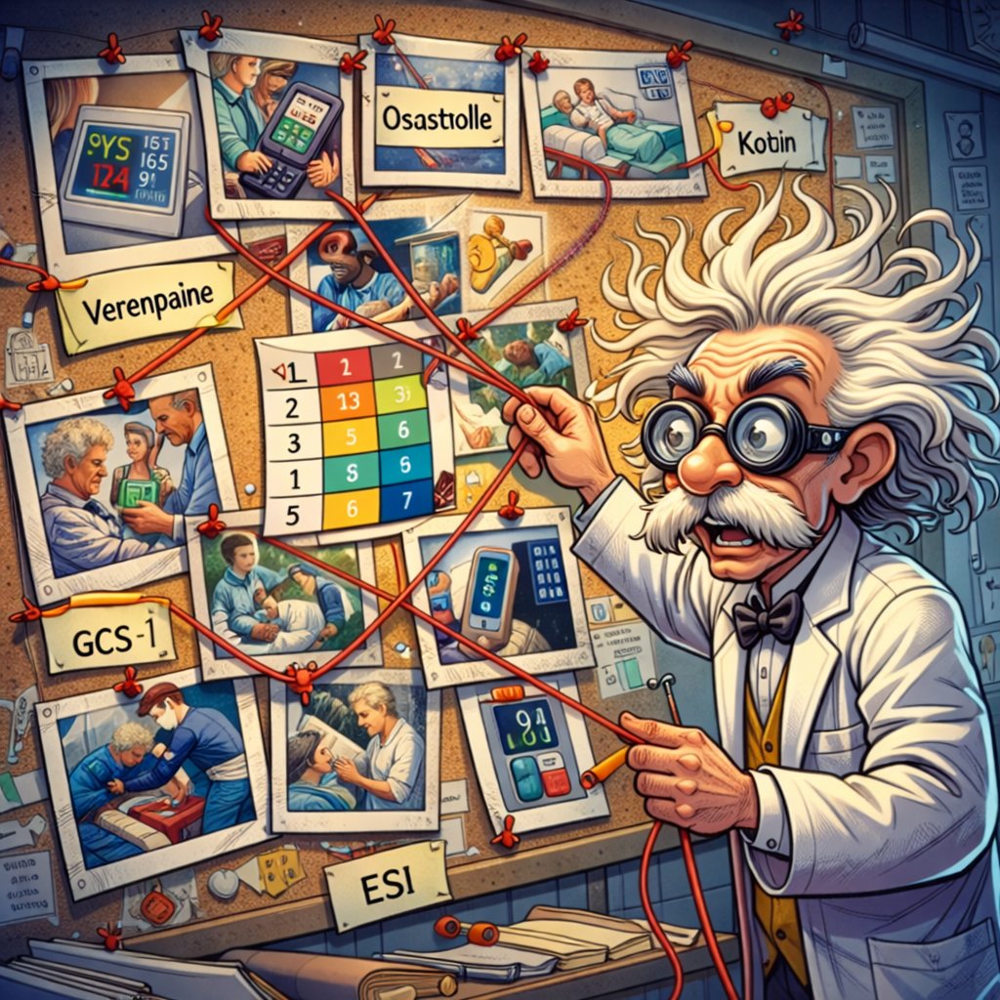
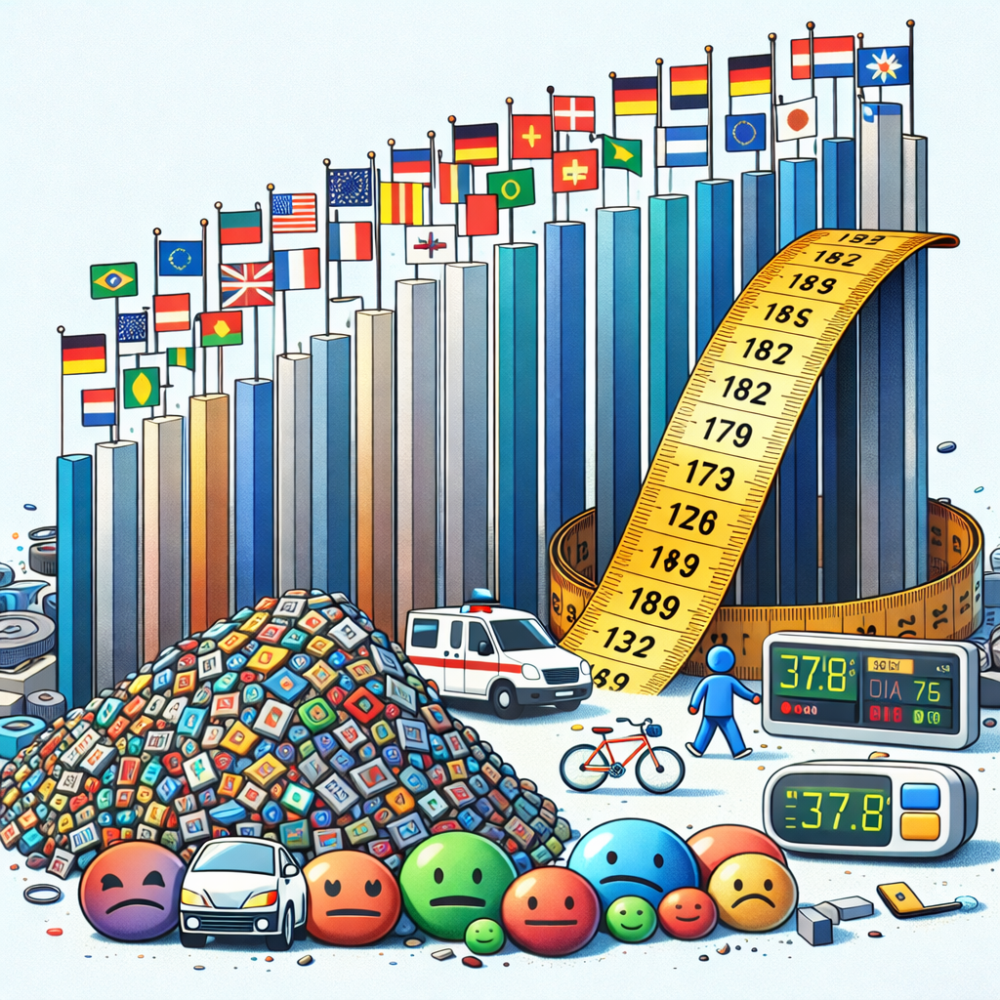
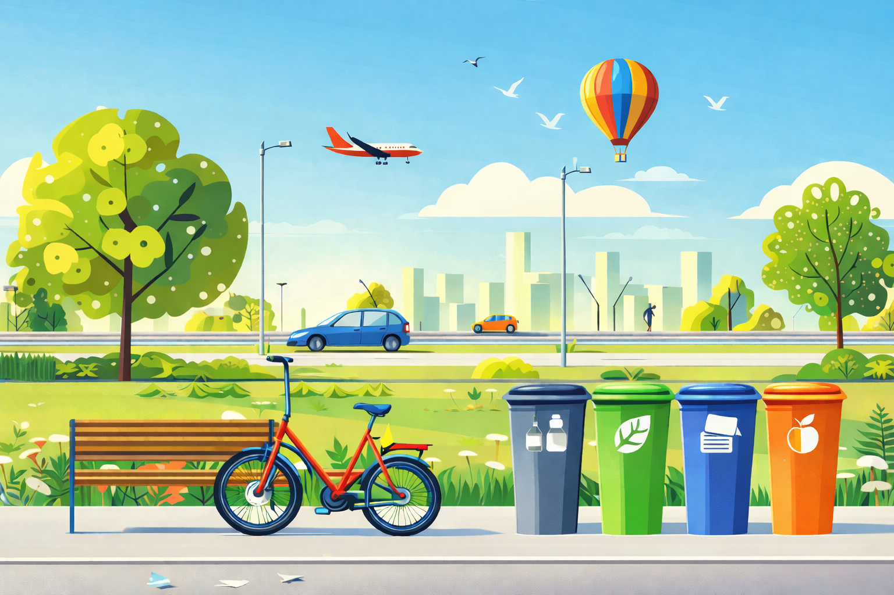
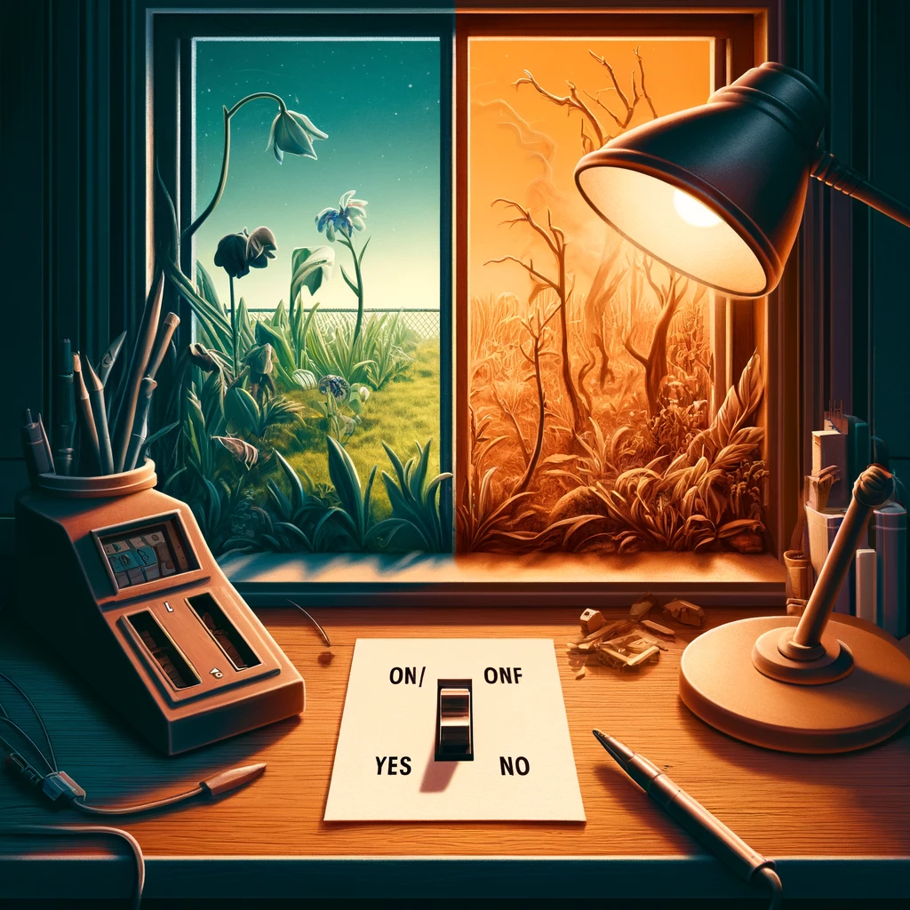
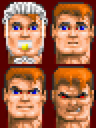
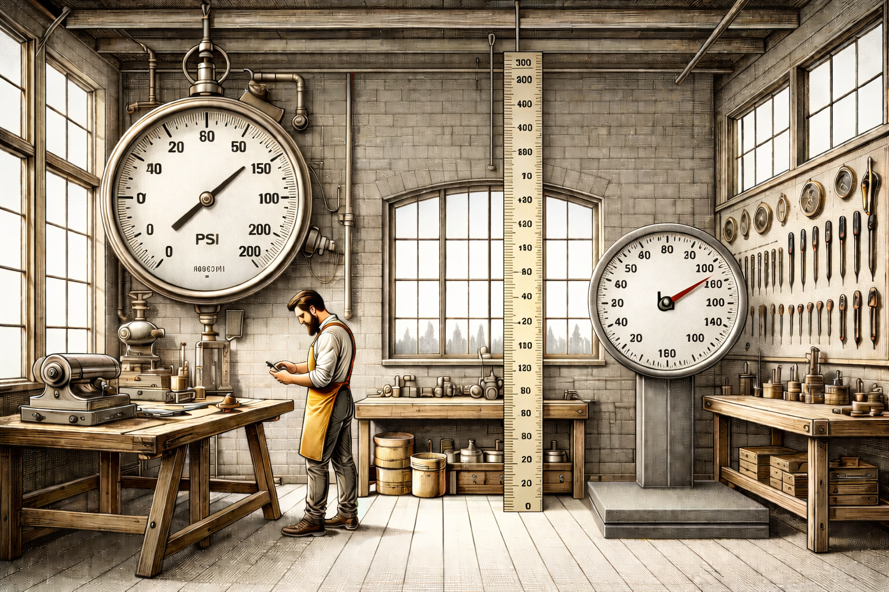
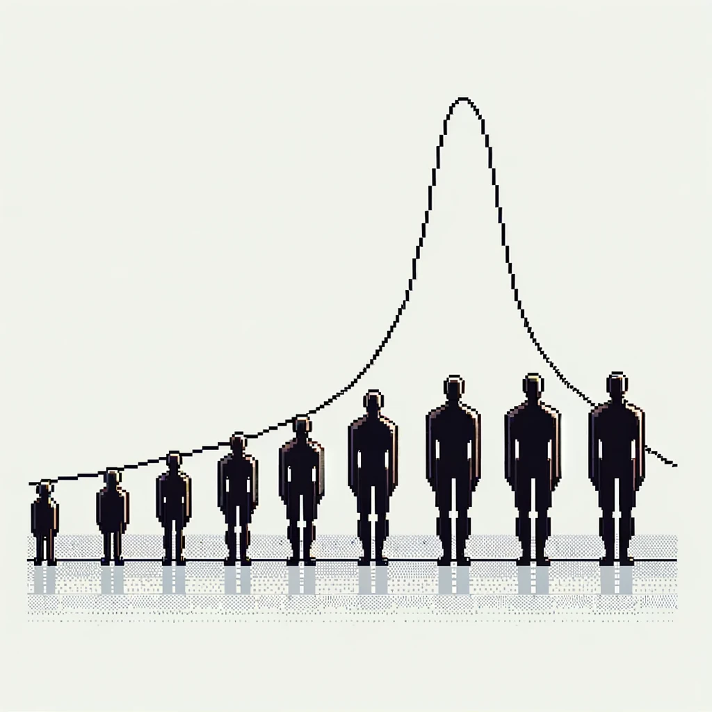
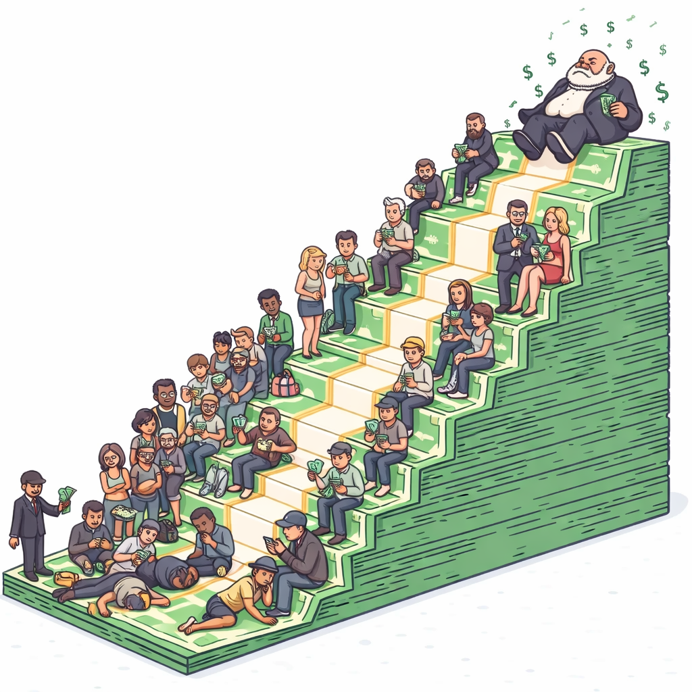
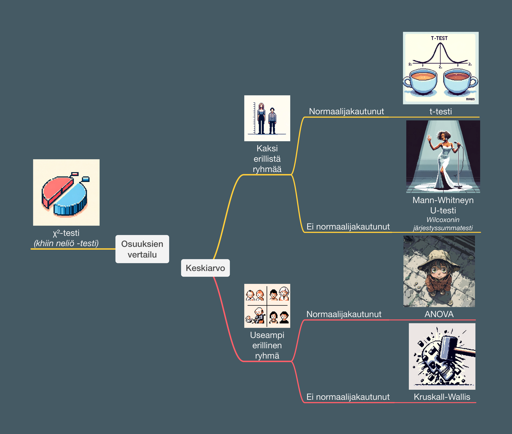
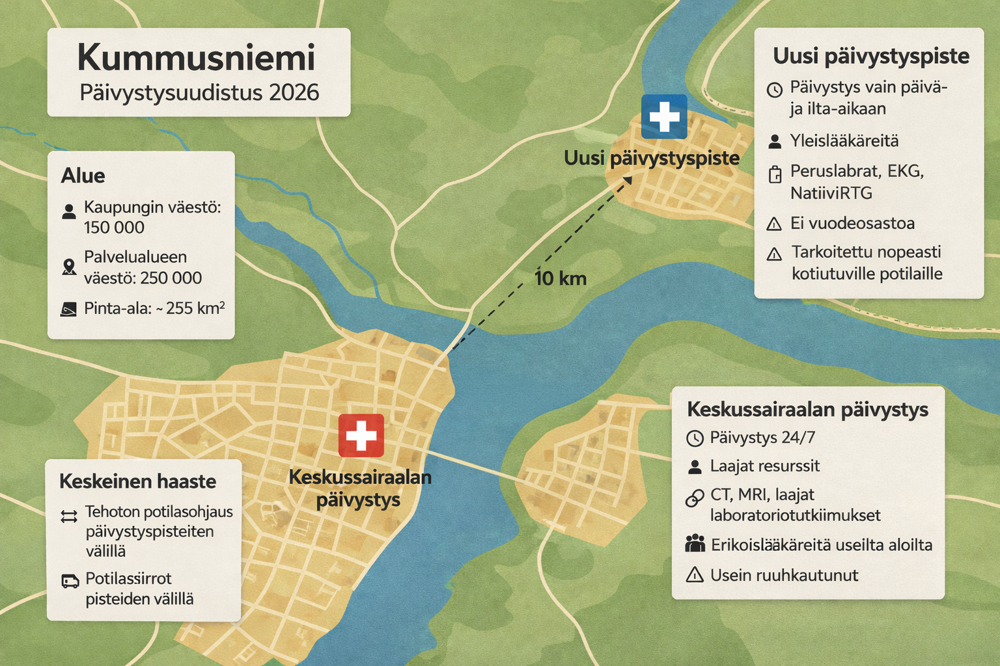

FinnEM Akatemia Workshop 2026
Arvioida kahden tekijän välistä:

Mitattavan muuttujan tyyppi vaikuttaa merkittävästi lähestymistapaan

(aka kategorinen, faktori, laatueroasteikko)

(aka. binomiaalinen, looginen, boolean, bivariaatti, tosiarvo)

(aka. järjestysmuuttuja)

(aka. skalaari, mitta-asteikko)

Kokeile taitojasi muuttujatyyppien lajittelussa Tilasto Ninja Pelin Taso 1:llä.
Kirjoita huippupisteet ja nimimerkki taululle.
"The greatest value of a picture is when it forces us to notice what we never expected to see." — John Tukey, amerikkalainen tilastotieteilijä
Pylväskuvaaja näyttää havaintojen jakautumisen luokkiin.
Saapumistapa päivystykseen (N = 800).
ESI-luokka × hoidon lopputulos.
ESI-triageluokka × hoidon lopputulos (N = 800).
60 aikuista pituusjärjestyksessä. Miten jakauma tiivistetään laatikkokuvioksi?
Outlier R:ssä: arvo < Q1 − 1.5 × IQR tai arvo > Q3 + 1.5 × IQR
Näkyykö saapumistavan ja jatkuvan muuttujan välillä ero?
Saapumistapa × valittu muuttuja (N = 800).
Pylvään korkeus = havaintojen lukumäärä. Hyvä jakauman hahmottamiseen.
Päivystyspotilaiden ikäjakauma (N = 800).
Kun arvot jakautuvat symmetrisesti keskiarvon ympärille. Keskiarvo ≈ mediaani.
Aikuisten pituusjakauma (N = 300, simuloitu). Punainen käyrä = teoreettinen normaalijakauma.
Histogrammi voi paljastaa piileviä alaryhmiä.
Potilaiden syke päivystyksessä (N ≈ 340, simuloitu). Kaksihuippuisen jakauman vuoksi kumpikaan keskiluku ei kuvaa ryhmää hyvin.
Histogrammi paljastaa datan laadun ongelmat.
Systolinen verenpaine (N = 200, simuloitu).
Oikealle vino jakauma: pitkä häntä suuriin arvoihin. Mediaani kuvaa tyypillistä arvoa paremmin.
Ensihoidon vasteajat. Mediaani (Md) kuvaa tyypillistä vasteaikaa paremmin kuin keskiarvo.
Jokainen piste = yksi potilas.
Ikä × systolinen verenpaine (N ≈ 200). Regressiosuora näyttää ryhmien eron.
Miten osastohoitoon otettujen osuus vaihtelee ryhmittäin?
Tilastollinen testaus
Onko saapumistavan ja lopputuloksen välillä yhteys?
| Osastohoito | Kotiutus | Yhteensä | |
|---|---|---|---|
| Ambulanssi | 134 (52%) | 122 (48%) | 256 |
| Kävellen | 26 (15%) | 144 (85%) | 170 |
| Yhteensä | 160 (38%) | 266 (62%) | 426 |



